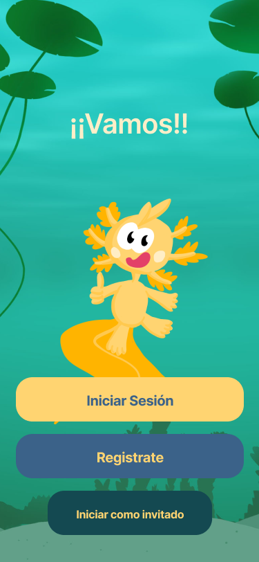
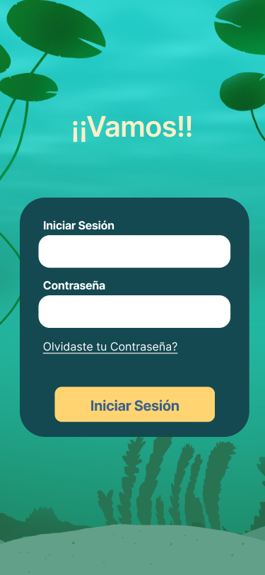
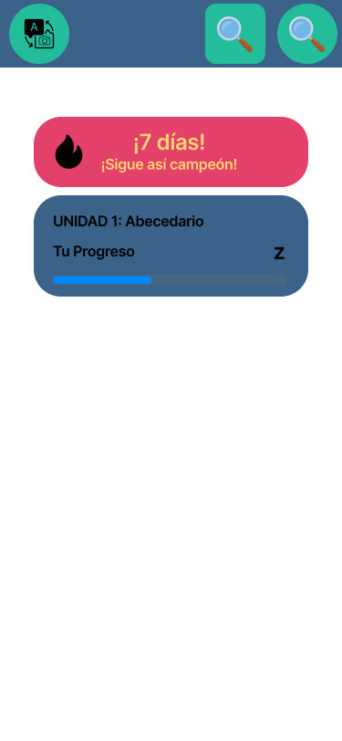

Ongoing · 2026
Yoolmi
UX/UI collaboration on a child-friendly Mexican Sign Language learning app. My work has included onboarding, login, lesson states, home structure and narrative integration. The project is still evolving.
UX/UI and flow work by me. Character and environmental art by the project team.


